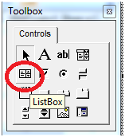
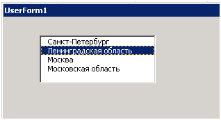
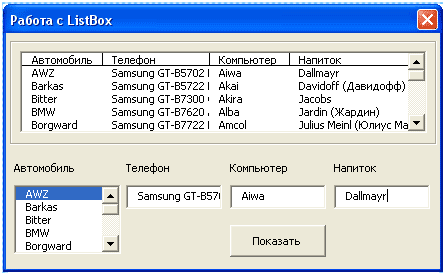
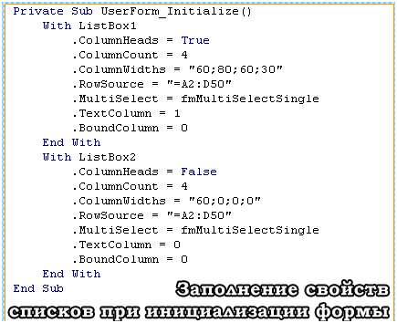
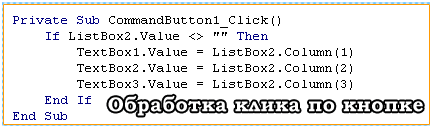
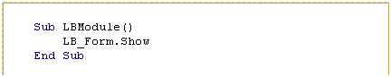

Элемент управления ListBox
Этот элемент управления очень похож на комбинированный список (Combobox), но применяется гораздо реже по двум причинам:

рис . 1.1 Элемент управления Listbox на панели ToolBox
рис. 1.2 Элемент управления Listbox на форме

рис. 1.3 Пример элемента управления Listbox на форме
Но у этого элемента управления есть и преимущества: в нем пользователь может выбирать не одно значение, как в ComboBox, а несколько.
Обычно ListBox используется:
Основные свойства, методы и события у ListBox — те же, что и у ComboBox. Главное отличие — то, что имеется свойство MultiSelect, которое позволяет пользователю выбирать несколько значений. По умолчанию это свойство отключено.
Вот некоторые свойства для объекта ListBox:
ColumnCount – позволяет задать количество столбиков в списке
ColumnHeads – позволяет задать режим отображения заголовков для колонок: true – заголовки отображаются, false – заголовки не отображаются. Данное свойство актуально при использовании компонента vba ListBox в Exel.
ColumnWidths – свойство определяет ширину колонок, например, “20;30;15”. Как видим, значение строковое, тут мы задали ширину для трех столбиков, если мы зададим ноль, то столбик не будет отображаться.
TextColumn – содержит целое значение, определяющее, содержимое которого столбца должно возвращать свойство Text.
BoundColumn – содержит целое значение, определяющее, содержимое которого столбца должно возвращать свойство Value.
Если для TextColumn и BoundColumn прописать 0, то будет возвращаться номер выбранного значения в списке объекта ListBox VBA языка.
Если вам надо вывести значение для заданного столбика, то надо просто прописать свойство Column задав после него в круглых скобках числовой индекс. Как все это работает, я покажу на примере дальше.
MultiSelect – позволяет определить, как происходит выбор элементов: 0 – fmMultuSelectSingle (только одиночный выбор), 1 – fmMultuSelectMulti (возможность выбирать несколько элементов щелчком мыши или посредством нажатия клавиши “Пробел”), 2 – fmMultuSelectExtended (возможность выбирать несколько элементов посредством нажатия клавиши “Shift”).
Теперь надо попрактиковаться, напишем пример использования компонента VBA ListBox в Excel.
Но прежде всего, надо заполнить четыре столбика различными данными. В книге в Excel заполнены первые четыре столбика такими данными:
Внешний вид формы вы можете увидеть на рисунке.

На форме должны быть расположены два элемента управления vba excel ListBox, три элемента TextBox и одна кнопка (CommandButton). Первый список будет содержать четыре столбца, в которых будет отображаться содержимое первых пятидесяти ячеек для A, B, C и D. Второй список будет содержать также все 4 столбика, но отображаться будет только первый. При нажатии на кнопку, произойдет считывание выбранного элемента во втором списке, и в текстовых полях отобразится содержимое для второй, третьей и четвертой колонки.

Чтобы не путать все еще больше, приступим к практике:
Private Sub UserForm_Initialize()
With ListBox1
.ColumnHeads = True
.ColumnCount = 4
.ColumnWidths = “60;80;60;30″
.RowSource = “=A2:D50″
.MultiSelect = fmMultiSelectSingle
.TextColumn = 1
.BoundColumn = 0
End With
With ListBox2
.ColumnHeads = False
.ColumnCount = 4
.ColumnWidths = “60;0;0;0″
.RowSource = “=A2:D50″
.MultiSelect = fmMultiSelectSingle
.TextColumn = 0
.BoundColumn = 0
End With
End Sub
Private Sub CommandButton1_Click()
If ListBox2.Value <> “” Then
TextBox1.Value = ListBox2.Column(1)
TextBox2.Value = ListBox2.Column(2)
TextBox3.Value = ListBox2.Column(3)
End If
End Sub


UserForm_Initialize – настройка данных при инициализации формы (UserForm). Тут происходит настройка свойств для первого и второго объекта ListBox vba языка:
ListBox1 – будет отображаться заголовок, компонент содержит четыре колонки, их ширина: 60;80;60;30. Данные в список будут добавляться из диапазона A2:D50, присутствует возможность выделять только один элемент в списке.
ListBox2 – тут практически все тоже самое, что и для первого списка, только ширина колонок: 60;0;0;0 – то есть, будет отображаться содержимое только первой колонки.
CommandButton1_Click – тут происходит обработка щелчка по кнопке, а именно: происходит проверка, выбрано ли что-то во втором списке (vba excel ListBox), если да, то в первое текстовое поле запишется содержимое из второй колонки, во второе – из третей и в третье – из четвертой.